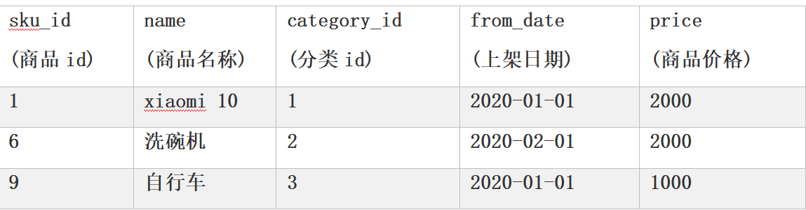
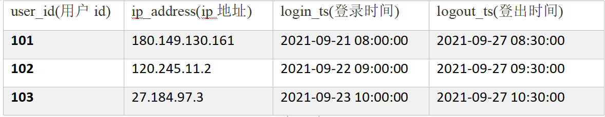

第一章 Hive入门
1.1 什么是Hive
基于Hadoop的一个数据仓库工具，可以将结构化的数据文件映射为一张表，并提供类SQL查询功能。
Hive是一个Hadoop客户端，用于将HQL（Hive SQL）转化成MapReduce程序。
（1）Hive中每张表的数据存储在HDFS
（2）Hive分析数据底层的实现是MapReduce（也可配置为Spark或者Tez）
（3）执行程序运行在Yarn上
为什么使用Hive？
MapReduce如果要实现复杂查询，逻辑开发难度比较大，使用Hive可以提高快速开发的能力，避免书写MapReduce，减少学习成本
1.2 Hive架构原理
一句话说清hive的架构原理：Hive架构由用户接口、元数据存储（Metastore）和驱动（解释器、编译器、优化器、执行器等）组成。用户通过接口创建HQL语句，由Metastore记录对应的元数据，通过一系列驱动进行HQL语句的分析优化和查询计划的生成（或者说翻译成MapReduce程序），生成的查询计划存储在HDFS中，随后在MapReduce调用执行，最后将计算结果返回给用户。

（1）用户接口：Client
CLI（command-line interface）、JDBC/ODBC。
①JDBC的移植性比ODBC好；（通常情况下，安装完ODBC驱动程序之后，还需要经过确定的配置才能够应用。而不相同的配置在不相同数据库服务器之间不能够通用。所以，安装一次就需要再配置一次。JDBC只需要选取适当的JDBC数据库驱动程序，就不需要额外的配置。在安装过程中，JDBC数据库驱动程序会自己完成有关的配置。）
②两者使用的语言不同，JDBC在Java编程时使用，ODBC一般在C/C++编程时使用
（2）元数据：Metastore
元数据包括：数据库（默认是default）、表名、表的拥有者、列/分区字段、表的类型（是否是外部表）、表的数据所在目录等。
默认存储在自带的derby数据库中，由于derby数据库只支持单客户端访问，生产环境中为了多人开发，推荐使用MySQL存储Metastore。
（3）驱动器：Driver
①解析器（SQLParser）：将SQL字符串转换成抽象语法树（AST）
②语义分析（Semantic Analyzer）：将AST进一步划分为QeuryBlock
③逻辑计划生成器（Logical Plan Gen）：将语法树生成逻辑计划
④逻辑优化器（Logical Optimizer）：对逻辑计划进行优化
⑤物理计划生成器（Physical Plan Gen）：根据优化后的逻辑计划生成物理计划
⑥物理优化器（Physical Optimizer）：对物理计划进行优化
⑦执行器（Execution）：执行该计划，得到查询结果并返回给客户端


（4）Hadoop
使用HDFS进行存储，可以选择MapReduce/Tez/Spark进行计算。
1.3 Hive SQL编译成MapReduce的过程
（1）词法、语法解析：根据 Antlr 定义的 sql 语法规则，将相关 sql 进行词法、语法解析，转化为抽象语法树 AST Tree
（2）语义解析：遍历 AST Tree，抽象出查询的基本组成单元 QueryBlock（包括输入源、计算过程、输出）
（3）生成逻辑执行阶段：遍历 QueryBlock，翻译为执行操作树 OperatorTree（TableScanOperator、SelectOperator、FilterOperator、JoinOperator、GroupByOperator、ReduceSinkOperator）
（4）优化逻辑执行计划：谓词下推、多路join等，达到减少MapReduce Job，减少数据传输及shuffle数据量
（5）生成物理执行过程：遍历 OperatorTree，翻译为 MapReduce 任务
（6）优化物理执行过程：物理层优化器进行 MapReduce 任务的变换，生成最终的执行计划
第二章 Hive安装
2.1 Hive安装部署
2.1.1 安装Hive
（0）首先确保hadoop集群启动
1 | [root@hadoop102 software]# xcall.sh jps |
（1）把apache-hive-3.1.3-bin.tar.gz上传到Linux的/opt/software目录下
1 | [root@hadoop102 software]# ll |
（2）解压apache-hive-3.1.3-bin.tar.gz到/opt/module/目录下面
1 | [root@hadoop102 software]# tar -zxvf apache-hive-3.1.3-bin.tar.gz -C /opt/module/ |
1 | [root@hadoop102 software]# cd /opt/module/ |
（3）修改apache-hive-3.1.3-bin的名称为hive
1 | [root@hadoop102 module]# mv apache-hive-3.1.3-bin/ hive |
（4）修改/etc/profile.d/my_env.sh，添加环境变量
1 | [root@hadoop102 etc]# vim /etc/profile.d/my_env.sh |
（5）初始化元数据库（默认是derby数据库）
1 | [root@hadoop102 hive]# bin/schematool -dbType derby -initSchema |
至此，Hive的最小化部署已经完成。
2.1.2 启动并使用Hive
（1）启动Hive
1 | [root@hadoop102 hive]# bin/hive |
（2）使用Hive
1 | hive> show databases; |
如果我们不去声明使用哪个数据库，我们默认使用的就是default数据库
1 | hive> show tables; |
建表语句执行的同时，可以在HDFS的Web端看到相应的路径：也就是说Hive中的表在Hadoop中是目录；Hive中的数据在Hadoop中是文件
1 | hive> insert into stu values(1,"ss"); |

1 | hive> select * from stu; |
（3）derby的问题：原因在于Hive默认使用的元数据库为derby。derby数据库的特点是同一时间只允许一个客户端访问。如果多个Hive客户端同时访问，就会报错。由于在企业开发中，都是多人协作开发，需要多客户端同时访问Hive，怎么解决呢？我们可以将Hive的元数据改为用MySQL存储，MySQL支持多客户端同时访问。

（4）退出hive客户端，在Hive的安装目录下及那个derby.log和metastore_db删除。顺便将HDFS上目录删除
1 | quit; |
2.2 MySQL安装
2.2.1 安装MySQL
（1）上传MySQL安装包及MySQL驱动jar包
1 | [root@hadoop102 software]# ll |
（2）解压MySQL安装包到/opt/software/mysql_lib
1 | [root@hadoop102 software]# mkdir mysql_lib |
（3）卸载系统自带的mariadb
1 | [root@hadoop102 ~]# rpm -qa | grep mariadb | xargs sudo rpm -e --nodeps |
（4）安装MySQL依赖
1 | [root@hadoop102 mysql_lib]# rpm -ivh mysql-community-common-5.7.28-1.el7.x86_64.rpm |
（5）安装mysql-client
1 | [root@hadoop102 mysql_lib]# rpm -ivh mysql-community-client-5.7.28-1.el7.x86_64.rpm |
（6）安装mysql-server
1 | [root@hadoop102 mysql_lib]# rpm -ivh mysql-community-server-5.7.28-1.el7.x86_64.rpm |
（7）启动MySQL
1 | [root@hadoop102 mysql_lib]# systemctl start mysqld |
（8）查看MySQL密码
1 | [root@hadoop102 mysql_lib]# cat /var/log/mysqld.log | grep password |
2.2.2 配置MySQL
配置主要是root用户+密码，在任何主机上都能登录MySQL数据库
（1）用刚刚查到的密码进入MySQL
1 | [root@hadoop102 mysql_lib]# mysql -uroot -p'yy54Rff=kwJI' |
（2）设置自己的密码（wy1998）
1 | # 首先更改MySQL密码策略 |
（3）修改user表，把Host表内容修改为%
1 | mysql> update user set host="%" where user="root"; |
（4）刷新并退出
1 | mysql> flush privileges; |
2.3 配置Hive元数据存储到MySQL
2.3.1 配置元数据到MySQL
（1）新建Hive元数据库
1 | # 登录MySQL |
（2）将MySQL的JDBC驱动拷贝到Hive的lib目录下
1 | [root@hadoop102 software]# cp mysql-connector-java-5.1.37.jar /opt/module/hive/lib/ |
（3）在$HIVE_HOME/conf目录下新建hive-site.xml文件
1 | [root@hadoop102 software]# cd /opt/module/hive/ |
1 |
|
（4）初始化Hive元数据库（修改采用MySQL存储元数据）
1 | [root@hadoop102 hive]# bin/schematool -dbType mysql -initSchema -verbose |
2.3.2 验证元数据是否配置成功
（1）再次启动Hive
1 | [root@hadoop102 hive]# bin/hive |
（2）使用Hive
1 | hive> show databases; |
一切正常，证明配置成功！！！
2.3.3 查看MySQL中的元数据（了解即可）
查看元数据库metastore存储的库信息
查看元数据库metastore存储的表信息
查看元数据库metastore存储的列相关信息
2.4 Hive服务部署
2.4.1 hiveserver2服务
Hive的hiveserver2服务的作用是提供jdbc/odbc接口，为用户提供远程访问Hive数据的功能，例如用户期望在个人电脑中访问远程服务中的Hive数据，就需要用到Hiveserver2。
（1）用户说明
在远程访问Hive数据时，客户端并未直接访问Hadoop集群，而是由Hivesever2代理访问。由于Hadoop集群中的数据具备访问权限控制，所以此时需考虑一个问题：那就是访问Hadoop集群的用户身份是谁？是Hiveserver2的启动用户？还是客户端的登录用户？
答案是都有可能，具体是谁，由Hiveserver2的hive.server2.enable.doAs参数决定，该参数的含义是是否启用Hiveserver2用户模拟的功能。若启用，则Hiveserver2会模拟成客户端的登录用户去访问Hadoop集群的数据，不启用，则Hivesever2会直接使用启动用户访问Hadoop集群数据。模拟用户的功能，默认是开启的。
未启用：

启用：
生产环境，推荐开启用户模拟功能，因为开启后才能保证各用户之间的权限隔离。
（2）hiveserver2部署
①hadoop端配置
hivesever2的模拟用户功能，依赖于Hadoop提供的proxy user（代理用户功能），只有Hadoop中的代理用户才能模拟其他用户的身份访问Hadoop集群。因此，需要将hiveserver2的启动用户设置为Hadoop的代理用户，配置方式如下：
1 | [root@hadoop102 hive]# cd /opt/module/hadoop-3.1.3/etc/hadoop/ |
1 | <!--配置所有节点的atguigu用户都可作为代理用户--> |
1 | 分发配置文件 |
②Hive端配置
1 | [root@hadoop102 hadoop]# cd /opt/module/hive/conf/ |
1 | <!-- 指定hiveserver2连接的host --> |
（3）测试
1 | 启动hiveserver2 |
1 | 使用命令行客户端beeline进行远程访问 |
使用Datagrip图形化客户端进行远程访问：
（4）配置Datagrip连接
①创建连接
②配置连接属性
③测试sql执行
2.4.2 metastore服务
Hive的metastore服务的作用是为Hive CLI或者Hiveserver2提供元数据访问接口。metastore有两种运行模式，分别为嵌入式模式和独立服务模式，生产环境中，推荐使用独立服务模式。
直接看独立服务模式：
将metastore服务部署在hadoop102，在hadoop103上部署一个客户端
1 | ①首先将hadoop102的hive安装包发送到hadoop103 |
1 |
|
1 | ⑤在hadoop103上访问hive |
1 | hive> show tables; |
2.4.3 编写Hive服务启动脚本
注意：如果不编写脚本执行以下两个语句
1 | 启动hiveserver2 |
下面来编写Hive服务的启停脚本，实现服务的启动和关闭（类似于myhadoop.sh）
1 | [root@hadoop102 hive]# cd /opt/module/hive/bin |
1 | !/bin/bash |
1 | 添加执行权限 |
2.5 Hive使用技巧
2.5.1 Hive常用交互命令
（1）“-e”不进入hive的交互窗口执行hql语句
1 | [root@hadoop102 bin]# hive -e "insert into stu values(1,'aa')" |
（2）“-f”执行脚本中的hql语句
1 | ①/opt/module/hive/下创建datas目录并在datas目录下创建hivef.sql文件 |
1 | select * from stu; |
1 | ②执行文件中的hql语句 |
1 | ③执行文件中的hql语句并将结果写入文件中 |
2.5.2 Hive参数配置方式
（1）查看当前所有的配置信息
1 | hive>set; |
（2）参数的配置三种方式
①配置文件方式
默认配置文件：hive-default.xml
用户自定义配置文件：hive-site.xml
注意：用户自定义配置会覆盖默认配置。另外，Hive也会读入Hadoop的配置，因为Hive是作为Hadoop的客户端启动的，Hive的配置会覆盖Hadoop的配置。配置文件的设定对本机启动的所有Hive进程都有效。
②命令行参数方式
1 | 启动Hive时，可以在命令行添加-hiveconf param=value来设定参数。仅对本次Hive启动有效，例如： |
③参数声明方式
1 | # 在Hql中使用set关键字设定参数，仅对本次Hive启动有效 |
上述三种设定方式的优先级依次递增。即配置文件< 命令行参数< 参数声明。注意某些系统级的参数，例如log4j相关的设定，必须用前两种方式设定，因为那些参数的读取在会话建立以前已经完成了。
2.5.3 Hive常见属性配置
（1）Hive客户端显示当前库和表头
1 | 在hive-site.xml中加入如下两个配置: |
1 | <property> |
此时再打开hive客户端：
1 | hive (default)> select * from stu; |
（2）hive运行日志路径配置
1 | 首先修改/conf/hive-log4j2.properties.template文件名称为hive-log4j2.properties |
1 | # 修改配置如下： |
（3）Hive的JVM堆内存设置
新版本的Hive启动的时候，默认申请的JVM堆内存大小为256M，JVM堆内存申请的太小，导致后期开启本地模式，执行复杂的SQL时经常会报错：java.lang.OutOfMemoryError: Java heap space，因此最好提前调整一下HADOOP_HEAPSIZE这个参数。
1 | 将/conf下的hive-env.sh.template为hive-env.sh |
（4）关闭Hadoop虚拟内存检查
1 | 关闭hadoop集群 |
1 | <property> |
1 | 分发配置文件 |
第三章 DDL数据定义
3.1 数据库（database）
3.1.1 创建数据库
（1）语法
1 | CREATE DATABASE [IF NOT EXISTS] database_name |
（2）案例
1 | // 创建一个数据库，不指定路径 |
1 | //创建一个数据库，指定路径 |
1 | //创建一个数据库，带有dbproperties |
3.1.2 查询数据库
3.1.2.1 展示所有数据库
（1）语法
1 | SHOW DATABASES [LIKE 'identifier_with_wildcards']; |
注：like通配表达式说明：*表示任意个任意字符，|表示或的关系。
（2）案例
1 | show databases ; |
1 | db_hive |
1 | show databases like 'db_hive*'; |
1 | db_hive |
3.1.2.2 查看数据库信息
（1）语法
1 | DESCRIBE DATABASE [EXTENDED] db_name; |
（2）案例
1 | describe database extended db_hive3; |
3.1.3 修改数据库
用户可以使用alter database命令修改数据库某些信息，其中能够修改的信息包括dbproperties、location、owner user。需要注意的是：修改数据库location，不会改变当前已有表的路径信息，而只是改变后续创建的新表的默认的父目录。
（1）语法
1 | -- 修改dbproperties |
（2）案例
1 | alter database db_hive3 set dbproperties ('create_date'='2023-10-10'); |
3.1.4 删除数据库（慎用）
（1）语法
1 | DROP DATABASE [IF EXISTS] database_name [RESTRICT|CASCADE]; |
注：RESTRICT：严格模式，若数据库不为空，则会删除失败，默认为该模式。
CASCADE：级联模式，若数据库不为空，则会将库中的表一并删除。
3.1.5 切换当前数据库
略
3.2 表（table）
3.2.1 创建表
3.2.1.1 语法
（1）普通建表
1 | CREATE [TEMPORARY] [EXTERNAL] TABLE [IF NOT EXISTS] [db_name.]table_name |
关键字说明：
①TEMPORARY：临时表，该表只在当前会话可见，会话结束，表会被删除。
②EXTERNAL：外部表，与之相对应的是内部表（管理表）。管理表意味着Hive会完全接管该表，包括元数据和HDFS中的数据。而外部表则意味着Hive只接管元数据，而不完全接管HDFS中的数据，外部表指向已经存在于HDFS上的数据。
内部表和外部表的区别，面试可能会问，详见《大数据面试题总结》
- 由external修饰的表为外部表，未被external修饰的表为内部表
- 内部表由Hive自身管理（包括元数据和HDFS中的数据）；外部表Hive只接管元数据，数据由HDFS管理
- 删除（drop）内部表会直接删除元数据及HDFS上的文件；删除（drop）外部表仅仅会删除元数据，HDFS上的文件并不会删除
- 清空（truncate）表操作只能清空内部表，清空外部表将报错
③data_type（重点）：
说明decimal(16,2)：代表最多有16位数字，其中后2位是小数，整数部分是14位；如果整数部分超过14位，这个字段就会变成null，如果小数部分不足2位，后面用0补齐两位，小数部分超过两位，超出部分四舍五入。直接写decimal默认是decimal(10,0)。
12345678909876.12
123456789098765——null
12345678909876.1—–12345678909876.10
12345678909876.125—–12345678909876.13
一般而言，在hive中，整数用int，特别多的整数用bigint，小数用double或decimal(推荐)，字符串用string
Hive的基本数据类型可以相互转换：
隐式转换（知道就行）：
a. 任何整数类型都可以隐式地转换为一个范围更广的类型，如tinyint可以转换成int，int可以转换成bigint。
b. 所有整数类型、float和string类型都可以隐式地转换成double。
c. tinyint、smallint、int都可以转换为float。
d. boolean类型不可以转换为任何其它的类型。
显式转换：
可以借助cast函数完成显示的类型转换
1 | select '1' + 2, cast('1' as int) + 2; |
1 | 3,3 |
④PARTITIONED BY（重点）：创建分区表
⑤CLUSTERED BY … SORTED BY…INTO … BUCKETS（重点）：创建分桶表
⑥ROW FORMAT（重点）：指定SERDE，SERDE是Serializer and Deserializer的简写。Hive使用SERDE序列化和反序列化每行数据。

⑦STORED AS（重点）：指定文件格式，常用的文件格式有，textfile（默认值），sequence file，orc file、parquet file等等。
⑧LOCATION：指定表所对应的HDFS路径，若不指定路径，其默认值${hive.metastore.warehouse.dir}/db_name.db/table_name
⑨TBLPROPERTIES：用于配置表的一些KV键值对参数
（2）Create Table As Select（CTAS）建表
该语法允许用户利用select查询语句返回的结果，直接建表，表的结构和查询语句的结构保持一致，且保证包含select查询语句放回的内容。
（3）Create Table Like语法
该语法允许用户复刻一张已经存在的表结构，与上述的CTAS语法不同，该语法创建出来的表中不包含数据，只是一个表的框架
3.2.1.2 案例
（1）内部表与外部表
1 | -- （1）内部表 |
准备其需要的文件如下：
1 | [root@hadoop102 module]# mkdir /opt/module/datas |
上传文件到Hive表指定的路径
1 | [root@hadoop102 datas]# hadoop fs -put student.txt /user/hive/warehouse/student |
在datagrip端就可以查到：
1 | -- 删除表，其中表结构和数据都被删除了，HDFS上的文件也没了 |
1 | -- （2）外部表 |
1 | 上传文件到Hive表指定的路径 |
1 | -- 删除表，此时HDFS中的数据文件仍然存在 |
（2）SERDE和复杂数据类型
若现有如下格式的JSON文件需要由Hive进行分析处理，请考虑如何设计表？
注：以下内容为格式化之后的结果，文件中每行数据为一个完整的JSON字符串。
1 | { |
我们可以考虑使用专门负责JSON文件的JSON Serde，设计表字段时，表的字段与JSON字符串中的一级字段保持一致，对于具有嵌套结构的JSON字符串，考虑使用合适复杂数据类型保存其内容。最终设计出的表结构如下：
1 | create table teacher |
1 | 创建文件数据并上传到HIve表指定的路径 |
在datagrip端可以看到数据：
尝试从复杂数据类型的字段中取值：
1 | select friends[0], students['xiaohaihai'], address.city |
（3）creat table select和create table like
1 | -- creat table select建出来的表结构和数据都有 |
1 | -- create table like建出来的表只有结构没有里面的数据，是一个空表 |
3.2.2 查看表
（1）展示所有表
1 | SHOW TABLES [IN database_name] LIKE ['identifier_with_wildcards']; |
1 | show tables like 'stu*'; |
（2）查看表信息
1 | DESCRIBE [EXTENDED | FORMATTED] [db_name.]table_name |
注：EXTENDED：展示详细信息
FORMATTED：对详细信息进行格式化的展示
1 | -- 查看基本信息 |
1 | -- 查看更多信息 |
3.2.3 修改表
（1）重命名表
1 | ALTER TABLE table_name RENAME TO new_table_name |
1 | alter table stu rename to stu1; |
（2）修改列信息
1 | -- ①增加列：该语句允许用户增加新的列，新增列的位置位于末尾。 |
1 | -- ②更新列：该语句允许用户修改指定列的列名、数据类型、注释信息以及在表中的位置。 |
1 | -- ③替换列：该语句允许用户用新的列集替换表中原有的全部列。 |
3.2.4 删除表
删除表，同时删除表中的数据和表结构（也可以理解为直接删除表结构，表结构都没了，表中数据自然就没了）
1 | -- 删除表 |
3.2.5 清空表
清空表，顾名思义，就是保留表结构，清空表中的数据
1 | -- 清空表：注意：truncate只能清空管理表，不能删除外部表中数据。 |
第四章 DML（数据操作）
4.1 Load
Load语句可将文件导入到Hive表中。
（1）语法
1 | LOAD DATA [LOCAL] INPATH 'filepath' [OVERWRITE] INTO TABLE tablename [PARTITION (partcol1=val1, partcol2=val2 ...)]; |
关键字说明：
①local：表示从本地加载数据到Hive表；否则从HDFS加载数据到Hive表。
加上local表示从本地复制数据到hive表，不加local表示从HDFS上剪切数据到hive表
②overwrite：表示覆盖表中已有数据，否则表示追加。
③partition：表示上传到指定分区，若目标是分区表，需指定分区。
（2）案例实操
1 | -- ①首先创建一张表 |
1 | ③上传文件到HDFS |
1 | -- ③加载HDFS上的数据，导入完成后去HDFS上查看文件是否还存在（不存在了） |
追加操作：
位于HDFS上的/user/atguigu/student.txt文件已经不在了
4.2 Insert
4.2.1 将查询结果插入表中
（1）语法
1 | INSERT (INTO | OVERWRITE) TABLE tablename [PARTITION (partcol1=val1, partcol2=val2 ...)] select_statement; |
关键字说明：
①INTO：将结果追加到目标表
②OVERWRITE：用结果覆盖原有数据
（2）案例
1 | -- 新建一张表 |
4.2.2 将给定Values插入表中
（1）语法
1 | INSERT (INTO | OVERWRITE) TABLE tablename [PARTITION (partcol1[=val1], partcol2[=val2] ...)] VALUES values_row [, values_row ...] |
（2）案例
1 | -- 将给定Values插入表中 |
4.2.3 将查询结果写入目标路径
（1）语法
1 | INSERT OVERWRITE [LOCAL] DIRECTORY directory |
（2）案例
1 | -- 将查询结果写入目标路径(本地路径) |
再去查看’/opt/module/datas/student111’,
1 | [root@hadoop102 ~]# cd /opt/module/datas/student111/ |
1 | {"_col0":1001,"_col1":"student1"} |
4.3 Export&Import
Export导出语句可将表的数据和元数据信息一并导出到HDFS路径，Import可将Export导出的内容导入Hive，表的数据和元数据信息都会恢复。Export和Import可用于两个Hive实例之间的数据迁移。
（1）语法
1 | -- 导出 |
（1）案例
1 | -- 导出 |
1 | --导入 |
注意：因为Hadoop不支持HDFS文件中数据的更改和删除（只能一条条追加数据），所以Hive中也不支持对数据的改写和删除
第五章 查询
5.1 基础语法
基本语法
1 | SELECT [ALL | DISTINCT] select_expr, select_expr, ... |
5.2 基本查询（Select…from）
5.2.1 数据准备
1 | 在/opt/module/hive/datas/路径上创建dept.txt文件，并赋值如下内容：部门编号 部门名称 部门位置id |
1 | 在/opt/module/hive/datas/路径上创建emp.txt文件，并赋值如下内容：员工编号 姓名 岗位 薪资 部门 |
1 | -- 创建部门表 |
5.2.2 全表和特定列查询
1 | -- 全表查询 |

注意：
（1）SQL 语言大小写不敏感。
（2）SQL 可以写在一行或者多行。
（3）关键字不能被缩写也不能分行。
（4）各子句一般要分行写。
（5）使用缩进提高语句的可读性。
5.2.3 列别名
1）重命名一个列
2）便于计算
3）紧跟列名，也可以在列名和别名之间加入关键字‘AS’（个人习惯，最好加上吧）
1 | -- 查询名称和部门 |
5.2.4 Limit语句
典型的查询会返回多行数据。limit子句用于限制返回的行数。
1 | select * from emp |
1 | select * from emp |
1 | -- 取第一行数据，以下两种方式都行 |
5.2.5 Where语句
1）使用where子句，将不满足条件的行过滤掉
2）where子句紧随from子句
5.2.6 关系运算符
1 | select empno as emp_id, |
1 | select * |
1 | -- like进行模糊匹配 |
1 | 7369,张三,研发,800,30 |
5.2.7 逻辑运算符
1 | select * |
5.2.8 聚合函数
count(*)，表示统计所有行数，包含null值；
count(某列)，表示该列一共有多少行，不包含null值；
max()，求最大值，不包含null，除非所有值都是null；
min()，求最小值，不包含null，除非所有值都是null；
sum()，求和，不包含null。
avg()，求平均值，不包含null。
1 | -- 求总行数 |
1 | -- 求工资的最大值（max） |
1 | -- 求工资的最小值（min） |
1 | -- 求工资的总和（sum） |
1 | -- 求工资的平均值（avg） |

5.3 分组
5.3.1 Group By语句
Group By语句通常会和聚合函数一起使用，按照一个或者多个列队结果进行分组，然后对每个组执行聚合操作。
1 | -- 计算emp表每个部门的平均工资 |
1 | -- 计算emp中每个部门中每个岗位的最高薪水 |
5.3.2 Having语句
1）having与where不同点
（1）where后面不能写分组聚合函数，而having后面可以使用分组聚合函数。
（2）having只用于group by分组统计语句。
1 | -- 计算emp表中每个部门的平均工资大于等于2000的部门编号和平均工资 |
1 | --等价于 |
5.4 Join语句
5.4.1 等值Join
简单理解Join：即把两张表横向“合并”成一个宽表
Hive支持通常的sql join语句，不等值连接不常用，但Hive3.x也支持，此处不再举例。
1 | -- 根据员工表和部门表中的部门编号相等，查询员工编号、员工名称和部门名称。 |
1 | -- 根据员工表和部门表中的部门编号相等，查询不同地区的员工数 |
5.4.2 内连接
内连接：只有进行连接的两个表中都存在与连接条件相匹配的数据才会被保留下来。
1 | -- 内连接 |
5.4.3 左外连接
左外连接：join操作符左边表中符合where子句的所有记录将会被返回。
1 | -- 左外连接 |
5.4.4. 右外连接
右外连接：join操作符右边表中符合where子句的所有记录将会被返回。
1 | -- 右外连接 |
5.4.5 满（全）外连接
满外连接：将会返回所有表中符合where语句条件的所有记录。如果任一表的指定字段没有符合条件的值的话，那么就使用null值替代。
1 | -- 满外连接 |
5.4.6 多表连接
注意：连接n个表，至少需要n-1个连接条件。例如：连接三个表，至少需要两个连接条件。
1 | 数据准备：在/opt/module/hive/datas/下：vim location.txt 部门位置id 部门位置 |
1 | -- 创建位置表 |
1 | -- 多表连接查询 |
大多数情况下，Hive会对每对join连接对象启动一个MapReduce任务。本例中会首先启动一个MapReduce job对表e和表d进行连接操作，然后会再启动一个MapReduce job将第一个MapReduce job的输出和表l进行连接操作。
5.4.7 笛卡尔积
1）笛卡尔集会在下面条件下产生（在实际生产环境中应该避免）
（1）省略连接条件
（2）连接条件无效
（3）所有表中的所有行互相连接
1 | -- 笛卡尔积写法1 |
5.4.8 联合（union&union all）
union和union all都是上下拼接sql的结果，这点是和join有区别的，join是左右关联，union和union all是上下拼接。union去重，union all不去重。
注意：union连接的一定是select查询语句
union和union all在上下拼接sql结果时有两个要求：
（1）两个sql的结果，列的个数必须相同
（2）两个sql的结果，上下所对应列的类型必须一致
1 | -- 将员工表30部门的员工信息和40部门的员工信息，利用union进行拼接显示。 |

5.5 排序
5.5.1 全局排序（order by）
Order By：全局排序，只有一个Reduce。asc（ascend）：升序（默认）；desc（descend）：降序
Order By子句在select语句的结尾
1 | -- 查询员工信息按工资升序排列 |

1 | --多个列排序：按照部门和工资升序排序。 |
在生产实践中，order by一般不单独使用，因为单独使用最终会汇总到一个大的reduce中进行全局排序，效率低下也容易出问题。所以往往将order by结合limit一起使用实现TOPN的效果。
1 | --与limit结合使用 |
以下三个by是hive中特有的，但在实际的工作当中，很少用
5.5.2 每个Reduce内部排序（sort by）
Sort By：对于大规模的数据集order by的效率非常低。在很多情况下，并不需要全局排序，此时可以使用****Sort by****。
Sort by为每个reduce产生一个排序文件。每个Reduce内部进行排序，对全局结果集来说不是排序。
1 | --测试sort by |
1 | --将查询结果导入到文件中（按照部门编号降序排序） |
查看目标路径下的文件：有三个文件
1 | [root@hadoop102 datas]# cd /opt/module/hive/datas/sortby-result/ |
5.5.3 分区（distribute by）
Distribute By：在有些情况下，我们需要控制某个特定行应该到哪个Reducer，通常是为了进行后续的聚集操作。****distribute by*子句可以做这件事。distribute by*类似MapReduce中partition（自定义分区），进行分区，结合sort by使用。
对于distribute by进行测试，一定要分配多reduce进行处理，否则无法看到distribute by的效果。
1 | --测试distribute by |
查看目标路径下的文件：
1 | [root@hadoop102 datas]# cd /opt/module/hive/datas/distribute-result/ |
注意：
distribute by的分区规则是根据分区字段的hash码与reduce的个数进行相除后，余数相同的分到一个区。
Hive要求****distribute by****语句要写在sort by语句之前。
演示完以后mapreduce.job.reduces的值要设置回-1，否则下面分区or分桶表load跑MapReduce的时候会报错。
5.5.4 分区排序（cluster by）
当distribute by和sort by字段相同时，可以使用cluster by方式。
cluster by除了具有distribute by的功能外还兼具sort by的功能。但是排序只能是升序排序，不能指定排序规则为asc或者desc。
1 | --测试cluster by |
查看文件：
1 | [root@hadoop102 distribute-result]# cd /opt/module/hive/datas/cluster-result/ |
第六章 综合案例练习（初级）
需要的表一览：
student_info:
course_info:
teacher_info:
score_info:
1 | --1.查询姓名中带“冰”的学生名单 |
1 | --5. 查询编号为“02”的课程的总成绩 |
1 | --6. 查询参加考试的学生个数(思路：对成绩表中的学号做去重并count) |
1 | --7. 查询各科成绩最高和最低的分，以如下的形式显示：课程号，最高分，最低分 |
1 | --8. 查询每门课程有多少学生参加了考试（有考试成绩） |
1 | --9. 查询男生、女生人数 |
1 | --10.查询平均成绩大于60分的学生的学号和平均成绩 |
1 | --11.查询至少选修四门课程的学生学号 |
1 | --12.查询同姓（假设每个学生姓名的第一个字为姓）的学生名单并统计同姓人数大于等于2的姓 |
1 | --13.查询每门课程的平均成绩，结果按平均成绩升序排序，平均成绩相同时，按课程号降序排列 |
1 | --14.统计参加考试人数大于等于15的学科 |
1 | --15.查询每个学生的总成绩并按照总成绩降序排序 |
1 | --16.按照如下格式显示学生的语文、数学、英语三科成绩，没有成绩的输出为0，按照学生的有效平均成绩降序显示 |
说明：
nvl(expr1, expr2)：若expr1为Null，则返回expr2，否则返回expr1
COALESCE(a1,a2,……,an)：返回a1,a2,……,an中遇到的第一个不为NULL的值
1 | -- 3.4.3 查询一共参加三门课程且其中一门为语文课程的学生的id和姓名 |
1 | -- 4.1.1 查询所有课程成绩均小于60分的学生的学号、姓名 |
1 | -- 4.1.2 查询没有学全所有课的学生的学号、姓名 |
1 | -- 4.1.3 查询出只选修了三门课程的全部学生的学号和姓名 |
1 | -- 5.1.1 查询有两门及以上的课程不及格的同学的学号及其平均成绩 |
1 | -- 5.1.2 查询所有学生的学号、姓名、选课数、总成绩 |
1 | -- 5.1.3 查询平均成绩大于85的所有学生的学号、姓名和平均成绩 |
1 | -- 5.1.5 查询出每门课程的及格人数和不及格人数 |
1 | -- 5.1.6 查询课程编号为03且课程成绩在80分以上的学生的学号和姓名及课程信息 |
1 | -- 5.2.1 课程编号为"01"且课程分数小于60，按分数降序排列的学生信息 |
1 | -- 5.2.2 查询所有课程成绩在70分以上的学生的姓名、课程名称和分数，按分数升序排列 |
1 | -- 5.2.4 查询课程编号为“01”的课程比“02”的课程成绩高的所有学生的学号 |

1 | -- 5.2.5 查询学过编号为“01”的课程并且也学过编号为“02”的课程的学生的学号、姓名 |
1 | -- 5.2.6 查询学过“李体音”老师所教的所有课的同学的学号、姓名 |
1 | -- 5.2.7 [课堂讲解]查询学过“李体音”老师所讲授的任意一门课程的学生的学号、姓名 |
第七章 函数
Hive提供了大量的内置函数，按照其特点可大致分为如下几类：单行函数、聚合函数、炸裂函数、窗口函数。
7.1 单行函数
单行函数的特点是一进一出，即输入一行，输出一行。
单行函数按照功能可分为如下几类: 日期函数、字符串函数、集合函数、数学函数、流程控制函数等。
7.1.1 算术运算函数
7.1.2 数值函数
1 | --round：四舍五入 |
7.1.3 字符串函数
1 | -- 1. substring：截取字符串 |
1 | -- 2.replace ：替换 |
1 | --3.regexp_replace：正则替换 |
关于JSON字符串的说明
JSON通常用于Web项目前后端的交互上，做大数据一般不会涉及这个前后端的交互。我们的数据通常来源于业务系统，采集到的数据通常是JSON格式的字符串。
1 | { |
1 | [ |
1 | --10.get_json_object：解析json字符串 |
7.1.4 日期函数
1 | --1.unix_timestamp：返回当前或指定时间的时间戳 |
7.1.5 流程控制函数
（1）case when：条件判断函数
1 | /* |
1 | /* |
（2）if：条件判断，类似于java中的三元运算符
1 | /* |
7.1.6 集合函数
1 | -- （1）array 声明array集合 |
7.1.7 案例准备
1 | -- 1）统计每个月的入职人数 |
1 | -- 2）查询每个人的年龄（年 + 月） |
1 | -- 3）按照薪资，奖金的和进行倒序排序，如果奖金为null，置位0 |
1 | -- 4）查询每个人有多少个朋友 |
1 | -- 5）查询每个人的孩子的姓名 |
1 | -- 6）查询每个岗位男女各多少人 |
7.2 高级聚合函数
多进一出 （多行传入，一个行输出）。
1）普通聚合：count(), sum(), max(), min(), avg()等函数，见5.2.8节
2）collect_list 收集并形成list集合，结果不去重
3）collect_set 收集并形成set集合，结果去重
1 | select collect_list(job) |
1 | select collect_set(job) |
7.2.1 案例演示
1 | -- 1）每个月的入职人数以及姓名 |
7.3 炸裂函数（重难点）
7.3.1 概述
UDTF，接收一行数据，输出一行或多行数据
1 | -- （1）explode(ARRAY<T> a) |
1 | -- （2）explode(Map<K,V> m) |
1 | -- （3）posexplode(ARRAY<T> a) |
1 | -- （4）inline(ARRAY<STRUCT<f1:T1,...,fn:Tn>> a) |
Latera View 通常与UDTF配合使用。Lateral View可以将UDTF应用到源表的每行数据，将每行数据转换为一行或多行，并将源表中每行的输出结果与该行连接起来，形成一个虚拟表。
7.3.2 案例演示

根据上述电影信息表，统计各分类的电影数量：
1 | select movie, split(category, ',') cates |

1 | select movie, cate |

1 | select cate, count(*) |

7.4 窗口函数（开窗函数）
7.4.1 概述
窗口函数，能为每行数据划分一个窗口，然后对窗口范围内的数据进行计算，最后将计算结果返回给该行数据。
窗口函数的语法中主要包括“窗口”和“函数”两部分。其中“窗口”用于定义计算范围，“函数”用于定义计算逻辑。

①语法-函数：绝大多数的聚合函数都可以配合窗口使用，例如max(),min(),sum(),count(),avg()等。
②语法-窗口：窗口范围的定义分为两种类型，一种是基于行的，一种是基于值的
此时order by[column]必须写，表明按照column列的顺序基于行进行窗口范围划分
此时order by[column]中的column是基于column字段进行窗口范围划分
③语法-窗口-分区：定义窗口范围时，可以指定分区字段，每个分区单独划分窗口。 语法：partition by
④语法-窗口-缺省
7.4.2 常用窗口函数
按照功能，常用窗口可划分为如下几类：聚合函数、跨行取值函数、排名函数。
- 聚合函数：max，min，sum，avg，count
- 跨行取值函数：lead和lag，first_value和last_value
- 排名函数：rank，dense_rank，row_number

注：lag和lead函数不支持自定义窗口
注意：这里面的窗口范围是默认的range[第一行，当前行]；所以从上到下的窗口范围依次为：
[2022-01-01, 2022-01-01] first_date: 2022-01-01 last_date: 2022-01-01
[2022-01-01, 2022-01-02] first_date: 2022-01-01 last_date: 2022-01-02
[2022-01-01, 2022-01-03] first_date: 2022-01-01 last_date: 2022-01-03
[2022-01-04, 2022-01-04] first_date: 2022-01-04 last_date: 2022-01-04
[2022-01-04, 2022-01-05] first_date: 2022-01-04 last_date: 2022-01-05
[2022-01-04, 2022-01-06] first_date: 2022-01-04 last_date: 2022-01-06

注：rank 、dense_rank、row_number不支持自定义窗口。
7.4.3 案例演示
1 | -- 1）统计每个用户截至每次下单的累积下单总额 |
1 | -- 2）统计每个用户截至每次下单的当月累积下单总额 |
1 | -- 3）统计每个用户每次下单距离上次下单相隔的天数（首次下单按0天算） |
1 | -- 4）查询所有下单记录以及每个用户的每个下单记录所在月份的首/末次下单日期,注意：first_value不需要加窗口范围；last_value需要加窗口范围 |

1 | -- 5）为每个用户的所有下单记录按照订单金额进行排名 |
1 | -- 扩展：分组TOPN:【固定套路，要记住】 |
7.5 自定义函数（用的不多）
Hive自定义了一些函数，如min，max等，但是数量有限，我们可以通过自定义UDF来方便扩展
7.6 自定义UDF函数
（0）需求：自定义一个UDF实现计算给定基本数据类型的长度，例如：
1 | select my_len("abcd"); |
（1）创建一个Maven工程Hive
（2）导入依赖
1 | <dependencies> |
（3）创建一个类
1 | public class MyLength extends GenericUDF { |
（4）创建临时函数
①打成jar包上传到服务器/opt/module/hive/datas/
1 | [root@hadoop102 datas]# ll |
②将jar包添加到hive的classpath，临时生效
1 | add jar /opt/module/hive/datas/myudf.jar; |
③创建临时函数与开发好的java class关联
1 | create temporary function my_len |
④即可在hql中使用自定义的临时函数
1 | select my_len("ghghgh");--6 |
注意：临时函数只跟会话有关系，跟库没有关系。只要创建临时函数的会话不断，在当前会话下，任意一个库都可以使用，其他会话全都不能使用。
⑤删除临时函数
1 | drop temporary function my_len; |
（5）创建永久函数
在hadoop102网页端新建udf文件夹并上传jar包
执行创建函数的语句：
1 | create function my_len |
1 | select my_len("ghghgh");--6 |
注意：永久函数跟会话没有关系，创建函数的会话断了以后，其他会话也可以使用。
永久函数创建的时候，在函数名之前需要自己加上库名，如果不指定库名的话，会默认把当前库的库名给加上。
永久函数使用的时候，需要在指定的库里面操作，或者在其他库里面使用的话加上，库名.函数名。
第八章 综合案例练习（中级）
用户信息表：
商品信息表：
商品分类信息表：
订单信息表：
订单明细表：
登录明细表：
商品价格变更明细表：
配送信息表：
好友关系表：
收藏信息表：
1 | --2.1 查询累积销量排名第二的商品 |
1 | --2.2 查询至少连续三天下单的用户 |
1 | --②使用Lead窗口函数，以user_id进行分区且对create_date进行排序，得到新的一列lead2 |
1 | --③对查询表②的lead2字段和create_date字段进行减法运算，得到差值diff字段，并筛选diff字段等于2的行 |
1 | --④选择查询表③的user_id字段，并去重 |
1 | --2.2 思路2 |
1 | --2.2 思路3 |
1 | --2.3 查询各品类销售商品的种类数及销量最高的商品 |
1 | --②将查询表①join上sku_info表和category_info表，按照商品分类给销量进行升序排列，并统计每个商品分类下的商品数 |
1 | --③对表②进行过滤rk=1（销量最高） |
1 | --2.4 查询用户的累计消费金额及VIP等级 |
1 | --②每个用户的累计消费金额 |
1 | --③加上对应等级 |
1 | --2.5 查询首次下单后第二天连续下单的用户比率 |
1 | --②过滤查询表①中的rk <= 2的行 |
1 | --③将查询表②中的每个用户的两个日期分成第一次下单日期和第二次下单日期 |
1 | --④求比例 |
第九章 分区表和分桶表
9.1 分区表
Hive中的分区就是把一张大表的数据按照业务需要分散的存储到多个目录，每个目录就称为该表的一个分区。在查询时通过where子句中的表达式选择查询所需要的分区，这样的查询效率会提高很多。
9.1.1 分区表基本语法
1. 创建分区表
1 | --算上分区字段一共四个字段 |
2. 分区表读写数据
（1）写数据-load
在/opt/module/hive/datas/路径上创建文件dept_20220401.log，并输入如下内容。
1 | [root@hadoop102 datas]# vim dept_20220401.log |
装载语句：
1 | load data local inpath '/opt/module/hive/datas/dept_20220401.log' |
（2）写数据-insert
1 | -- 将day='20220401'分区的数据插入到day='20220402'分区，可执行如下装载语句 |
（3）读数据
1 | -- 查询分区表数据时，可以将分区字段看作表的伪列，可像使用其他字段一样使用分区字段。 |
3. 分区表基本操作
1 | -- 1）查看所有分区信息 |
当然查看hadoop102web端也能看到：
1 | -- 2）增加分区 |
1 | --（2）同时创建多个分区（分区之间不能有逗号） |
1 | -- 3）删除分区 |
4）修复分区
Hive将分区表的所有分区信息都保存在了元数据中，只有元数据与HDFS上的分区路径一致时，分区表才能正常读写数据。若用户手动创建/删除分区路径，Hive都是感知不到的，这样就会导致Hive的元数据和HDFS的分区路径不一致。再比如，若分区表为外部表，用户执行drop partition命令后，分区元数据会被删除，而HDFS的分区路径不会被删除，同样会导致Hive的元数据和HDFS的分区路径不一致。
若出现元数据和HDFS路径不一致的情况，可通过如下几种手段进行修复。
1 | alter table dept_partition add partition (day = '20220403'); |
9.1.2 二级分区表
思考：如果一天内的日志数据量也很大，如何再将数据拆分?答案是二级分区表，例如可以在按天分区的基础上，再对每天的数据按小时进行分区。
在实际项目中，分区表都是按照时间分区的。因为Hive做的是批处理（离线处理），也就是Hive攒下一批数据后做一次统一的处理，大多数离线项目中，一批也就是一天
1 | -- 1）二级分区表建表语句 |
9.1.3 动态分区
动态分区是指向分区表insert数据时，被写往的分区不由用户指定，而是由每行数据的最后一个字段的值来动态的决定。使用动态分区，可只用一个insert语句将数据写入多个分区。
（1）动态分区相关参数
1 | -- （1）动态分区功能总开关（默认true，开启） |
（2）案例实操
需求：将dept表中的数据按照地区（loc字段），插入到目标表dept_partition_dynamic的相应分区中。
1 | -- （1）创建目标分区表 |
1 | select *from dept_partition_dynamic; |
在HDFS中：/user/hive/warehouse/partition_bucket.db/dept_partition_dynamic/loc=1700目录下
1 | 10 行政部 |
/user/hive/warehouse/partition_bucket.db/dept_partition_dynamic/loc=1800目录下
1 | 20 财务部 |
/user/hive/warehouse/partition_bucket.db/dept_partition_dynamic/loc=1900目录下
1 | 30 教学部 |
9.2 分桶表
分区提供一个隔离数据和优化查询的便利方式。不过，并非所有的数据集都可形成合理的分区。对于一张表或者分区，Hive 可以进一步组织成桶，也就是更为细粒度的数据范围划分，分区针对的是数据的存储路径，分桶针对的是数据文件。
分桶表的基本原理是，首先为每行数据计算一个指定字段的数据的hash值，然后模以（%）一个指定的分桶数，最后将取模运算结果相同的行，写入同一个文件中，这个文件就称为一个分桶（bucket）。将数据按照指定的字段进行分成多个桶中去，说白了就是将数据按照字段进行划分，可以将数据按照字段划分到多个文件当中去。
一个表没有分区直接分桶，就将表整体去分桶。如果一个表已经分区了，就在每个分好区的表内进行分桶。
9.2.1 分桶表基本语法
（1）建表语句
1 | create table stu_buck( |
（2）数据装载
在/opt/module/hive/datas/路径上创建student.txt文件，并输入如下内容
1 | 1001 student1 |
（3）导入数据到分桶表中
1 | load data local inpath '/opt/module/hive/datas/student.txt' |
（4）查看创建的分桶表中是否分成4个桶
（5）观察每个分桶表中的数据，实际上是按照id字段的hash值分桶的
000000_0:
1 | 1016 student16 |
000001_0:
1 | 1009 student9 |
000002_0:
1 | 1010 student10 |
000003_0:
1 | 1003 student3 |
第十章 文件格式和压缩
10.1 Hadoop压缩概述
10.2 Hive文件格式
为Hive表中的数据选择一个合适的文件格式，对提高查询性能的提高是十分有益的。Hive表数据的存储格式，可以选择text file、orc、parquet、sequence file等。
10.2.1 Text File
文本文件是Hive默认使用的文件格式，文本文件中的一行内容，就对应Hive表中的一行记录。默认格式，数据不做压缩，磁盘开销大，数据解析开销大。
建表语句
1 | create table textfile_table |
10.2.2 ORC
ORC（Optimized Row Columnar）file format是Hive 0.11版里引入的一种****列式存储****的文件格式。ORC文件能够提高Hive读写数据和处理数据的性能。与列式存储相对的是行式存储，下图是两者的对比：
（1）行存储的特点
查询满足条件的一整行数据的时候，列存储则需要去每个聚集的字段找到对应的每个列的值，行存储只需要找到其中一个值，其余的值都在相邻地方，所以此时行存储查询的速度更快。select *效率高
（2）列存储的特点
因为每个字段的数据聚集存储，在查询只需要少数几个字段的时候，能大大减少读取的数据量；每个字段的数据类型一定是相同的，列式存储可以针对性的设计更好的设计压缩算法。select 某些字段 效率高
前文提到的text file和sequence file都是基于行存储的，orc和parquet是基于列式存储的。
每个Orc文件由Header、Body和Tail三部分组成。
其中Header内容为ORC，用于表示文件类型。
Body由1个或多个stripe组成，每个stripe一般为HDFS的块大小，每一个stripe包含多条记录，这些记录按照列进行独立存储，每个stripe里有三部分组成，分别是Index Data，Row Data，Stripe Footer。
Index Data：一个轻量级的index，默认是为各列每隔1W行做一个索引。每个索引会记录第n万行的位置，和最近一万行的最大值和最小值等信息。
Row Data：存的是具体的数据，按列进行存储，并对每个列进行编码，分成多个Stream来存储。
Stripe Footer：存放的是各个Stream的位置以及各column的编码信息。
Tail由File Footer和PostScript组成。File Footer中保存了各Stripe的其实位置、索引长度、数据长度等信息，各Column的统计信息等；PostScript记录了整个文件的压缩类型以及File Footer的长度信息等。
在读取ORC文件时，会先从最后一个字节读取PostScript长度，进而读取到PostScript，从里面解析到File Footer长度，进而读取FileFooter，从中解析到各个Stripe信息，再读各个Stripe，即从后往前读。
（3）建表语句
1 | create table orc_table |

其中orc.stripe.size应该设置成和Hadoop中block大小一致，故最好设置成128M（134217728）
1 | create table test_orc |
10.2.3 Parquet
Parquet文件是Hadoop生态中的一个通用的文件格式，它也是一个列式存储的文件格式。
上图展示了一个Parquet文件的基本结构，文件的首尾都是该文件的Magic Code，用于校验它是否是一个Parquet文件。
首尾中间由若干个Row Group和一个Footer（File Meta Data）组成。
每个Row Group包含多个Column Chunk，每个Column Chunk包含多个Page。以下是Row Group、Column Chunk和Page三个概念的说明：
行组（Row Group）：一个行组对应逻辑表中的若干行。
列块（Column Chunk）：一个行组中的一列保存在一个列块中。
页（Page）：一个列块的数据会划分为若干个页。
Footer（File Meta Data）中存储了每个行组（Row Group）中的每个列快（Column Chunk）的元数据信息，元数据信息包含了该列的数据类型、该列的编码方式、该类的Data Page位置等信息。
（1）建表语句
1 | Create table parquet_table |
三种文件格式的性能比较：
压缩比比较：ORC>Parquet>textFile
存储文件的查询效率比较：ORC>TextFile>Parquet
10.3 压缩
在Hive表中和计算过程中，保持数据的压缩，对磁盘空间的有效利用和提高查询性能都是十分有益的。
表中的压缩即为表中存储的数据的压缩，计算过程的压缩即为MapReduce各个阶段输出的数据的压缩。
10.3.1 Hive表数据进行压缩
在Hive中，不同文件类型的表，声明数据压缩的方式是不同的。
（1）TextFile
若一张表的文件类型为TextFile，若需要对该表中的数据进行压缩，多数情况下，无需在建表语句做出声明。直接将压缩后的文件导入到该表即可，Hive在查询表中数据时，可自动识别其压缩格式，进行解压。
需要注意的是，在执行往表中导入数据的SQL语句时，用户需设置以下参数，来保证写入表中的数据是被压缩的。
1 | --SQL语句的最终输出结果是否压缩 |
（2）ORC
若一张表的文件类型为ORC，若需要对该表数据进行压缩，需在建表语句中声明压缩格式如下：
1 | create table orc_table |
（3）Parquet
若一张表的文件类型为Parquet，若需要对该表数据进行压缩，需在建表语句中声明压缩格式如下：
1 | create table orc_table |
10.3.2 计算过程中使用压缩
（1）单个MR的中间结果进行压缩
单个MR的中间结果是指Mapper输出的数据，对其进行压缩可降低shuffle阶段的网络IO，可通过以下参数进行配置：
1 | --开启MapReduce中间数据压缩功能 |
（2）单条SQL语句的中间结果进行压缩
单条SQL语句的中间结果是指，两个MR（一条SQL语句可能需要通过MR进行计算）之间的临时数据，可通过以下参数进行配置：
1 | --是否对两个MR之间的临时数据进行压缩 |
第十一章 企业级调优
11.1 计算资源配置
11.1.1 Yarn资源配置
（1）Yarn配置说明
需要调整的Yarn参数均与CPU、内存等资源有关，核心配置参数如下
①yarn.nodemanager.resource.memory-mb
该参数的含义是，一个NodeManager节点分配给Container使用的内存。该参数的配置，取决于NodeManager所在节点的总内存容量和该节点运行的其他服务的数量。
考虑上述因素，此处可将该参数设置为64G，如下：
1 | <property> |
②yarn.nodemanager.resource.cpu-vcores
该参数的含义是，一个NodeManager节点分配给Container使用的CPU核数。该参数的配置，同样取决于NodeManager所在节点的总CPU核数和该节点运行的其他服务。
考虑上述因素，此处可将该参数设置为16。
1 | <property> |
③yarn.scheduler.maximum-allocation-mb
该参数的含义是，单个Container能够使用的最大内存。推荐配置如下：
1 | <property> |
④yarn.scheduler.minimum-allocation-mb
该参数的含义是，单个Container能够使用的最小内存，推荐配置如下：
1 | <property> |
（2）Yarn配置实操
1 | [root@hadoop102 ~]# cd /opt/module/hadoop-3.1.3/etc/hadoop/ |
修改之后，分发配置文件，并重启Yarn
注意：以上参数要根据自己电脑的配置调整。16G运存的电脑建议不要调整了。
11.1.2 MapRuduce资源配置
MapReduce资源配置主要包括Map Task的内存和CPU核数，以及Reduce Task的内存和CPU核数。核心配置参数如下：
1）mapreduce.map.memory.mb
该参数的含义是，单个Map Task申请的container容器内存大小，其默认值为1024。该值不能超出yarn.scheduler.maximum-allocation-mb和yarn.scheduler.minimum-allocation-mb规定的范围。
该参数需要根据不同的计算任务单独进行配置，在hive中，可直接使用如下方式为每个SQL语句单独进行配置：
1 | set mapreduce.map.memory.mb=2048; |
2）mapreduce.map.cpu.vcores
该参数的含义是，单个Map Task申请的container容器cpu核数，其默认值为1。该值一般无需调整。
3）mapreduce.reduce.memory.mb
该参数的含义是，单个Reduce Task申请的container容器内存大小，其默认值为1024。该值同样不能超出yarn.scheduler.maximum-allocation-mb和yarn.scheduler.minimum-allocation-mb规定的范围。
该参数需要根据不同的计算任务单独进行配置，在hive中，可直接使用如下方式为每个SQL语句单独进行配置：
1 | set mapreduce.reduce.memory.mb=2048; |
4）mapreduce.reduce.cpu.vcores
该参数的含义是，单个Reduce Task申请的container容器cpu核数，其默认值为1。该值一般无需调整。
11.2 测试用表（略）
11.3 Explain查看执行计划（重点）
11.3.1 Explain执行计划概述
Explain呈现的执行计划，由一系列Stage组成，这一系列Stage具有依赖关系，每个Stage对应一个MapReduce Job，或者一个文件系统操作等。
若某个Stage对应的一个MapReduce Job，其Map端和Reduce端的计算逻辑分别由Map Operator Tree和Reduce Operator Tree进行描述，Operator Tree由一系列的Operator组成，一个Operator代表在Map或Reduce阶段的一个单一的逻辑操作，例如TableScan Operator，Select Operator，Join Operator等。
下图是由一个执行计划绘制而成：
常见的Operator及其作用如下：
- TableScan：表扫描操作，通常map端第一个操作肯定是表扫描操作
- Select Operator：选取操作
- Group By Operator：分组聚合操作
- Reduce Output Operator：输出到 reduce 操作
- Filter Operator：过滤操作
- Join Operator：join 操作
- File Output Operator：文件输出操作
- Fetch Operator 客户端获取数据操作
11.3.2 基本语法
1 | EXPLAIN [FORMATTED | EXTENDED | DEPENDENCY] query-sql |
注：FORMATTED、EXTENDED、DEPENDENCY关键字为可选项，各自作用如下。
- FORMATTED：将执行计划以JSON字符串的形式输出
- EXTENDED：输出执行计划中的额外信息，通常是读写的文件名等信息
- DEPENDENCY：输出执行计划读取的表及分区
11.3.3 案例实操
（1）部署可视化工具
1 | [root@hadoop102 ~]# cd dist/ |
（2）访问hadoop102:8900
（3）查看下面这条语句的执行计划
1 | explain formatted |
1 | {"STAGE DEPENDENCIES":{"Stage-1":{"ROOT STAGE":"TRUE"},"Stage-0":{"DEPENDENT STAGES":"Stage-1"}},"STAGE PLANS":{"Stage-1":{"Map Reduce":{"Map Operator Tree:":[{"TableScan":{"alias:":"order_detail","columns:":["order_id","sku_num"],"database:":"functions","Statistics:":"Num rows: 99 Data size: 2756 Basic stats: COMPLETE Column stats: NONE","table:":"order_detail","isTempTable:":"false","OperatorId:":"TS_0","children":{"Select Operator":{"expressions:":"order_id (type: string), sku_num (type: int)","columnExprMap:":{"BLOCK__OFFSET__INSIDE__FILE":"BLOCK__OFFSET__INSIDE__FILE","INPUT__FILE__NAME":"INPUT__FILE__NAME","ROW__ID":"ROW__ID","create_date":"create_date","order_detail_id":"order_detail_id","order_id":"order_id","price":"price","sku_id":"sku_id","sku_num":"sku_num"},"outputColumnNames:":["order_id","sku_num"],"Statistics:":"Num rows: 99 Data size: 2756 Basic stats: COMPLETE Column stats: NONE","OperatorId:":"SEL_7","children":{"Group By Operator":{"aggregations:":["sum(sku_num)"],"columnExprMap:":{"_col0":"order_id"},"keys:":"order_id (type: string)","mode:":"hash","outputColumnNames:":["_col0","_col1"],"Statistics:":"Num rows: 99 Data size: 2756 Basic stats: COMPLETE Column stats: NONE","OperatorId:":"GBY_8","children":{"Reduce Output Operator":{"columnExprMap:":{"KEY._col0":"_col0","VALUE._col0":"_col1"},"key expressions:":"_col0 (type: string)","sort order:":"+","Map-reduce partition columns:":"_col0 (type: string)","Statistics:":"Num rows: 99 Data size: 2756 Basic stats: COMPLETE Column stats: NONE","value expressions:":"_col1 (type: bigint)","OperatorId:":"RS_9"}}}}}}}}],"Execution mode:":"vectorized","Reduce Operator Tree:":{"Group By Operator":{"aggregations:":["sum(VALUE._col0)"],"columnExprMap:":{"_col0":"KEY._col0"},"keys:":"KEY._col0 (type: string)","mode:":"mergepartial","outputColumnNames:":["_col0","_col1"],"Statistics:":"Num rows: 49 Data size: 1364 Basic stats: COMPLETE Column stats: NONE","OperatorId:":"GBY_4","children":{"File Output Operator":{"compressed:":"false","Statistics:":"Num rows: 49 Data size: 1364 Basic stats: COMPLETE Column stats: NONE","table:":{"input format:":"org.apache.hadoop.mapred.SequenceFileInputFormat","output format:":"org.apache.hadoop.hive.ql.io.HiveSequenceFileOutputFormat","serde:":"org.apache.hadoop.hive.serde2.lazy.LazySimpleSerDe"},"OperatorId:":"FS_6"}}}}}},"Stage-0":{"Fetch Operator":{"limit:":"-1","Processor Tree:":{"ListSink":{"OperatorId:":"LIST_SINK_10"}}}}}} |
案例2：
1 | explain select sum(score) from score_info; |
1 | STAGE DEPENDENCIES: //各个 stage 之间的依赖性 |
一个 HIVE 查询被转换为一个由一个或多个 stage 组成的序列（有向无环图 DAG）。这些 stage 可以是 MapReduce stage，也可以是负责元数据存储的 stage，也可以是负责文件系统的操作（比如移动和重命名）的 stage。
对于两个写法不同的sql，我们可以观察它们的执行过程，来看两者的效率高低
案例3：explian dependency的用法
使用 explain dependency 查看 SQL 查询非分区普通表
1 | explain dependency select s_age,count(1) num from student_orc; |
1 | {"input_partitions":[],"input_tables":[{"tablename":"default@student_tb _orc","tabl |
使用 explain dependency 查看 SQL 查询分区表
1 | explain dependency select s_age,count(1) num from student_orc_partition; |
1 | {"input_partitions":[{"partitionName":"default@student_orc_partition@ part=0"}, |
explain dependency的实际应用
①识别看似等价的代码：
1 | --代码1： |
1 | //代码1的explain dependency结果： |
通过上面的输出结果可以看到，其实上述的两个 SQL 并不等价，代码 1 在内连接（inner join）中的连接条件（on）中加入非等值的过滤条件后，并没有将内连接的左右两个表按照过滤条件进行过滤，内连接在执行时会多读取 part=0 的分区数据。而在代码 2 中，会过滤掉不符合条件的分区。
②识别SQL读取数据范围的差别
1 | --代码 1： |
1 | //代码 1 的 explain dependency 结果： |
可以看到，对左外连接在连接条件中加入非等值过滤的条件，如果过滤条件是作用于右表（b 表）有起到过滤的效果，则右表只要扫描两个分区即可，但是左表（a表）会进行全表扫描。如果过滤条件是针对左表，则完全没有起到过滤的作用，那么两个表将进行全表扫描。这时的情况就如同全外连接一样都需要对两个数据进行全表扫描。
案例4：explain authorization的用法
通过 explain authorization 可以知道当前 SQL 访问的数据来源（INPUTS） 和数据输出（OUTPUTS），以及当前 Hive 的访问用户 （CURRENT_USER）和操作（OPERATION）。
1 | explain authorization |
1 | INPUTS: //数据来源 |
11.4 HQL语法优化之分组聚合优化
11.4.1 优化说明
Hive中未经优化的分组聚合，是通过一个MapReduce Job实现的。Map端负责读取数据，并按照分组字段分区，通过Shuffle，将数据发往Reduce端，各组数据在Reduce端完成最终的聚合运算。
Hive对分组聚合的优化主要围绕着减少Shuffle数据量进行，具体做法是map-side聚合。所谓map-side聚合，就是在map端维护一个hash table，利用其完成部分的聚合，然后将部分聚合的结果，按照分组字段分区，发送至reduce端，完成最终的聚合。map-side聚合能有效减少shuffle的数据量，提高分组聚合运算的效率。
map-side 聚合相关的参数如下：
1 | --启用map-side聚合 |
11.5 HQL语法优化之Join优化
11.5.1 Join算法概述
Hive拥有多种join算法，包括Common Join，Map Join，Bucket Map Join，Sort Merge Buckt Map Join等，下面对每种join算法做简要说明：
（1）Common Join
Common Join是Hive中最稳定的join算法，其通过一个MapReduce Job完成一个join操作。Map端负责读取join操作所需表的数据，并按照关联字段进行分区，通过Shuffle，将其发送到Reduce端，相同key的数据在Reduce端完成最终的Join操作。如下图所示：
需要注意的是，sql语句中的join操作和执行计划中的Common Join任务并非一对一的关系，一个sql语句中的相邻的且关联字段相同的多个join操作可以合并为一个Common Join任务。
1 | select |
上述sql语句中两个join操作的关联字段均为b表的key1字段，则该语句中的两个join操作可由一个Common Join任务实现，也就是可通过一个Map Reduce任务实现。
1 | select |
上述sql语句中的两个join操作关联字段各不相同，则该语句的两个join操作需要各自通过一个Common Join任务实现，也就是通过两个Map Reduce任务实现。
（2）Map Join
Map Join算法可以通过两个只有map阶段的Job完成一个join操作。其适用场景为大表join小表。若某join操作满足要求，则第一个Job会读取小表数据，将其制作为hash table，并上传至Hadoop分布式缓存（本质上是上传至HDFS）。第二个Job会先从分布式缓存中读取小表数据，并缓存在Map Task的内存中，然后扫描大表数据，这样在map端即可完成关联操作。如下图所示：
（3）Bucket Map Join
Bucket Map Join是对Map Join算法的改进，其打破了Map Join只适用于大表join小表的限制，可用于大表join大表的场景。
Bucket Map Join的核心思想是：若能保证参与join的表均为分桶表，且关联字段为分桶字段，且其中一张表的分桶数量是另外一张表分桶数量的整数倍，就能保证参与join的两张表的分桶之间具有明确的关联关系，所以就可以在两表的分桶间进行Map Join操作了。这样一来，第二个Job的Map端就无需再缓存小表的全表数据了，而只需缓存其所需的分桶即可。其原理如图所示：
（4）Sort Merge Bucket Map Join
Sort Merge Bucket Map Join（简称SMB Map Join）基于Bucket Map Join。SMB Map Join要求，参与join的表均为分桶表，且需保证分桶内的数据是有序的，且分桶字段、排序字段和关联字段为相同字段，且其中一张表的分桶数量是另外一张表分桶数量的整数倍。
SMB Map Join同Bucket Join一样，同样是利用两表各分桶之间的关联关系，在分桶之间进行join操作，不同的是，分桶之间的join操作的实现原理。Bucket Map Join，两个分桶之间的join实现原理为Hash Join算法；而SMB Map Join，两个分桶之间的join实现原理为Sort Merge Join算法。
Hash Join和Sort Merge Join均为关系型数据库中常见的Join实现算法。Hash Join的原理相对简单，就是对参与join的一张表构建hash table，然后扫描另外一张表，然后进行逐行匹配。Sort Merge Join需要在两张按照关联字段排好序的表中进行，其原理如图所示：
Hive中的SMB Map Join就是对两个分桶的数据按照上述思路进行Join操作。可以看出，SMB Map Join与Bucket Map Join相比，在进行Join操作时，Map端是无需对整个Bucket构建hash table，也无需在Map端缓存整个Bucket数据的，每个Mapper只需按顺序逐个key读取两个分桶的数据进行join即可。
11.5.2 Map Join
11.5.2.1 优化说明
Map Join有两种触发方式，一种是用户在SQL语句中增加hint提示（过时了不推荐），另外一种是Hive优化器根据参与join表的数据量大小，自动触发。
Hive在编译SQL语句阶段，起初所有的join操作均采用Common Join算法实现。
之后在物理优化阶段，Hive会根据每个Common Join任务所需表的大小判断该Common Join任务是否能够转换为Map Join任务，若满足要求，便将Common Join任务自动转换为Map Join任务。
但有些Common Join任务所需的表大小，在SQL的编译阶段是未知的（例如对子查询进行join操作），所以这种Common Join任务是否能转换成Map Join任务在编译阶是无法确定的。
针对这种情况，Hive会在编译阶段生成一个条件任务（Conditional Task），其下会包含一个计划列表，计划列表中包含转换后的Map Join任务以及原有的Common Join任务。最终具体采用哪个计划，是在运行时决定的。大致思路如下图所示：

Map join自动转换的具体判断逻辑如下图所示：
注意：a left join b：大表是a
a inner join b：大表是a或b
a right join b：大表是b
a full join b：不能进行map join，只能进行common join

图中涉及到的参数如下：
1 | --启动Map Join自动转换 |
11.5.2.2 优化案例
（1）示例SQL
1 | select |
（2）优化前
上述SQL语句共有三张表进行两次join操作，且两次join操作的关联字段不同。故优化前的执行计划应该包含两个Common Join operator，也就是由两个MapReduce任务实现。执行计划如下图所示：
（3）优化思路
三张表中，product_info和province_info数据量较小，可考虑将其作为小表，进行Map Join优化。
方案1：
1 | --启用Map Join自动转换。 |
样可保证将两个Common Join operator均可转为Map Join operator，并保留Common Join作为后备计划，保证计算任务的稳定。调整完的执行计划如下图：

方案2：
1 | --启用Map Join自动转换。 |
这样可直接将两个Common Join operator转为两个Map Join operator，并且由于两个Map Join operator的小表大小之和小于等于hive.auto.convert.join.noconditionaltask.size，故两个Map Join operator任务可合并为同一个。这个方案计算效率最高，但需要的内存也是最多的。

方案3：
1 | --启用Map Join自动转换。 |
这样可直接将两个Common Join operator转为Map Join operator，但不会将两个Map Join的任务合并。该方案计算效率比方案二低，但需要的内存也更少。
调整完的执行计划如下图：

11.5.3 Bucket Map Join
11.5.3.1 优化说明
Bucket Map Join不支持自动转换，发须通过用户在SQL语句中提供如下Hint提示，并配置如下相关参数，方可使用。注意，在MR引擎下的Hive已经烂尾了，在Hive on spark上是可以进行自动转换的。
（1）Hint提示
1 | select /*+ mapjoin(ta) */ |
（2）相关参数
1 | --关闭cbo优化，cbo会导致hint信息被忽略 |
11.5.3.2 优化案例
（1）示例SQL
1 | select |
（2）优化前
上述SQL语句共有两张表一次join操作，故优化前的执行计划应包含一个Common Join任务，通过一个MapReduce Job实现。执行计划如下图所示：
（3）优化思路
张表都相对较大，若采用普通的Map Join算法，则Map端需要较多的内存来缓存数据，当然可以选择为Map段分配更多的内存，来保证任务运行成功。但是，Map端的内存不可能无上限的分配，所以当参与Join的表数据量均过大时，就可以考虑采用Bucket Map Join算法。下面演示如何使用Bucket Map Join。
首先需要依据源表创建两个分桶表，order_detail建议分16个bucket，payment_detail建议分8个bucket,注意分桶个数的倍数关系以及分桶字段。
1 | --订单表 |
然后向两个分桶表导入数据。
1 | --订单表 |
然后设置以下参数：
1 | --关闭cbo优化，cbo会导致hint信息被忽略，需将如下参数修改为false |
最后在重写SQL语句，如下：
1 | select /*+ mapjoin(pd) */ |
优化后的执行计划如图所示：

11.5.4 Sort Merge Bucket Map Join
11.5.4.1 优化说明
Sort Merge Bucket Map Join有两种触发方式，包括Hint提示和自动转换。Hint提示已过时，不推荐使用。下面是自动转换的相关参数：
1 | --启动Sort Merge Bucket Map Join优化 |
11.5.4.2 优化案例
（1）示例SQL
1 | select |
（2）优化前
上述SQL语句共有两张表一次join操作，故优化前的执行计划应包含一个Common Join任务，通过一个MapReduce Job实现。
（3）优化思路
两张表都相对较大，除了可以考虑采用Bucket Map Join算法，还可以考虑SMB Join。相较于Bucket Map Join，SMB Map Join对分桶大小是没有要求的。下面演示如何使用SMB Map Join。
首先需要依据源表创建两个的有序的分桶表，order_detail建议分16个bucket，payment_detail建议分8个bucket,注意****分桶个数*的倍数关系以及分桶字段和排序字段*。
1 | --订单表 |
然后向两个分桶表导入数据。
1 | --订单表 |
然后设置以下参数：
1 | --启动Sort Merge Bucket Map Join优化 |
最后在重写SQL语句，如下：
1 | select |
优化后的执行计如图所示：
11.6 HQL语法优化之数据倾斜
11.6.1 数据倾斜概述
数据倾斜问题，通常是指参与计算的数据分布不均，即某个key或者某些key的数据量远超其他key，导致在shuffle阶段，大量相同key的数据被发往同一个Reduce，进而导致该Reduce所需的时间远超其他Reduce，成为整个任务的瓶颈。
Hive中的数据倾斜常出现在分组聚合和join操作的场景中，下面分别介绍在上述两种场景下的优化思路。
11.6.2 分组聚合导致的数据倾斜
11.6.2.1 优化说明
前文提到过，Hive中未经优化的分组聚合，是通过一个MapReduce Job实现的。Map端负责读取数据，并按照分组字段分区，通过Shuffle，将数据发往Reduce端，各组数据在Reduce端完成最终的聚合运算。
如果group by分组字段的值分布不均，就可能导致大量相同的key进入同一Reduce，从而导致数据倾斜问题。
由分组聚合导致的数据倾斜问题，有以下两种解决思路：
（1）Map-Side聚合
开启Map-Side聚合后，数据会现在Map端完成部分聚合工作。这样一来即便原始数据是倾斜的，经过Map端的初步聚合后，发往Reduce的数据也就不再倾斜了。最佳状态下，Map-端聚合能完全屏蔽数据倾斜问题。
相关参数如下：
1 | --启用map-side聚合 |
（2）Skew-GroupBy优化
Skew-GroupBy的原理是启动两个MR任务，第一个MR按照随机数分区，将数据分散发送到Reduce，完成部分聚合，第二个MR按照分组字段分区，完成最终聚合。
相关参数如下：
1 | --启用分组聚合数据倾斜优化 |
11.6.3 Join导致的数据倾斜
11.6.3.1 优化说明
前文提到过，未经优化的join操作，默认是使用common join算法，也就是通过一个MapReduce Job完成计算。Map端负责读取join操作所需表的数据，并按照关联字段进行分区，通过Shuffle，将其发送到Reduce端，相同key的数据在Reduce端完成最终的Join操作。
如果关联字段的值分布不均，就可能导致大量相同的key进入同一Reduce，从而导致数据倾斜问题。
由join导致的数据倾斜问题，有如下三种解决方案：
（1）map join
使用map join算法，join操作仅在map端就能完成，没有shuffle操作，没有reduce阶段，自然不会产生reduce端的数据倾斜。该方案适用于大表join小表时发生数据倾斜的场景。
相关参数如下：
1 | --启动Map Join自动转换 |
（2）skew join
skew join的原理是，为倾斜的大key单独启动一个map join任务进行计算，其余key进行正常的common join。原理图如下：
相关参数如下：
1 | --启用skew join优化 |
这种方案对参与join的源表大小没有要求，但是对两表中倾斜的key的数据量有要求，要求一张表中的倾斜key的数据量比较小（方便走mapjoin）。
（3）调整SQL语句
若参与join的两表均为大表，其中一张表的数据是倾斜的，此时也可通过以下方式对SQL语句进行相应的调整。
假设原始SQL语句如下：A，B两表均为大表，且其中一张表的数据是倾斜的。
1 | select |
图中1001为倾斜的大key，可以看到，其被发往了同一个Reduce进行处理。
调整SQL语句如下：
1 | select |
调整之后的SQL语句执行计划如下图所示：
11.7 HQL语法优化之任务并行度
11.7.1 优化说明
对于一个分布式的计算任务而言，设置一个合适的并行度十分重要。Hive的计算任务由MapReduce完成，故并行度的调整需要分为Map端和Reduce端。
11.7.1.1 Map端并行度
Map端的并行度，也就是Map的个数。是由输入文件的切片数决定的。一般情况下，Map端的并行度无需手动调整。
以下特殊情况可考虑调整map端并行度：
（1）查询的表中存在大量小文件
按照Hadoop默认的切片策略，一个小文件会单独启动一个map task负责计算。若查询的表中存在大量小文件，则会启动大量map task，造成计算资源的浪费。这种情况下，可以使用Hive提供的CombineHiveInputFormat，多个小文件合并为一个切片，从而控制map task个数。相关参数如下：
1 | set hive.input.format=org.apache.hadoop.hive.ql.io.CombineHiveInputFormat; |
（2）map端有复杂的查询逻辑
若SQL语句中有正则替换、json解析等复杂耗时的查询逻辑时，map端的计算会相对慢一些。若想加快计算速度，在计算资源充足的情况下，可考虑增大map端的并行度，令map task多一些，每个map task计算的数据少一些。相关参数如下：
1 | --一个切片的最大值 |
11.7.1.2 Reduce端的并行度
Reduce端的并行度，也就是Reduce个数。相对来说，更需要关注。Reduce端的并行度，可由用户自己指定，也可由Hive自行根据该MR Job输入的文件大小进行估算。
Reduce端的并行度的相关参数如下：
1 | --指定Reduce端并行度，默认值为-1，表示用户未指定 |
Reduce端并行度的确定逻辑如下：
若指定参数mapreduce.job.reduces的值为一个非负整数，则Reduce并行度为指定值。否则，Hive自行估算Reduce并行度，估算逻辑如下：
假设Job输入的文件大小为*totalInputBytes*
参数****hive.exec.reducers.bytes.per.reducer****的值为bytesPerReducer。
参数****hive.exec.reducers.max****的值为maxReducers。
则Reduce端的并行度为：

根据上述描述，可以看出，Hive自行估算Reduce并行度时，是以整个MR Job输入的文件大小作为依据的。因此，在某些情况下其估计的并行度很可能并不准确，此时就需要用户根据实际情况来指定Reduce并行度了。
11.8 HQL语法优化之小文件合并
HIve中小文件产生的原因
（1）直接向表中插入数据：每次插入都会产生一个文件，多次插入少量数据就会出现多个小文件
（2）通过load方式加载数据，每导入一个文件hive表就会产生一个文件
（3）通过查询方式加载数据（最常见）：其中，文件数量=ReduceTask数量×分区数（只有map阶段就是，文件数量=MapTask数量×分区数）
1 | insert overwrite table A select s_id,c_name,s_score from B; |
小文件过多的危害
（1）对于HDFS而言，其本身就不适合存储大量小文件，小文件过多会导致NameNode元数据特别大，占用内存太多，影响HDFS性能。
（2）对Hive而言，在进行查询时，每个小文件都会启动一个Map任务来完成，Map任务启动和初始化的时间远远大于逻辑处理的时间，本末倒置，造成资源浪费
11.8.1 优化说明
小文件合并优化，分为两个方面，分别是Map端输入的小文件合并，和Reduce端输出的小文件合并。
11.8.1.1 Map端输入文件合并
合并Map端输入的小文件，是指将多个小文件划分到一个切片中，进而由一个Map Task去处理。目的是防止为单个小文件启动一个Map Task，浪费计算资源。
相关参数为：
1 | --可将多个小文件切片，合并为一个切片，进而由一个map任务处理 |
11.8.1.2 Reduce端文件合并
合并Reduce端输出的小文件，是指将多个小文件合并成大文件。目的是减少HDFS小文件数量。其原理是根据计算任务输出文件的平均大小进行判断，若符合条件，则单独启动一个额外的任务进行合并。
相关参数为：
1 | --开启合并map only任务输出的小文件 |
11.8.1.3 减少Reduce的数量
1 | --reduce 的个数决定了输出的文件的个数，所以可以调整reduce的个数控制hive表的文件数量 |
11.8.1.4 使用Hive自带的concatenate命令，自动合并小文件
1 | --对于非分区表 |
11.8.1.5 使用hadoop的archive将小文件归档
Hadoop Archive简称HAR，是一个高效地将小文件放入HDFS块中的文件存档工具，它能够将多个小文件打包成一个HAR文件，这样在减少namenode内存使用的同时，仍然允许对文件进行透明的访问
1 | --用来控制归档是否可用 |
11.9 其他优化
11.9.1 CBO优化
11.9.1.1 优化说明
CBO是指Cost based Optimizer，即基于计算成本的优化。
在Hive中，计算成本模型考虑到了：数据的行数、CPU、本地IO、HDFS IO、网络IO等方面。Hive会计算同一SQL语句的不同执行计划的计算成本，并选出成本最低的执行计划。目前CBO在hive的MR引擎下主要用于join的优化，例如多表join的join顺序。
相关参数为：
1 | --是否启用cbo优化 |
11.9.1.2 优化案例
（1）示例SQL语句
1 | select |
（2）关闭CBO优化
1 | --关闭cbo优化 |
（3）开启CBO优化
1 | --开启cbo优化 |
（4）总结
根据上述案例可以看出，CBO优化对于执行计划中join顺序是有影响的，其之所以会将province_info的join顺序提前，是因为province info的数据量较小，将其提前，会有更大的概率使得中间结果的数据量变小，从而使整个计算任务的数据量减小，也就是使计算成本变小。
11.9.2 谓词下推
11.9.2.1 优化说明
谓词下推（predicate pushdown）是指，尽量将过滤操作前移，以减少后续计算步骤的数据量。
相关参数为：
1 | --是否启动谓词下推（predicate pushdown）优化 |
需要注意的是：
CBO优化也会完成一部分的谓词下推优化工作，因为在执行计划中，谓词越靠前，整个计划的计算成本就会越低。
11.9.3 矢量化查询
Hive的矢量化查询优化，依赖于CPU的矢量化计算，CPU的矢量化计算的基本原理如下图：
Hive的矢量化查询，可以极大的提高一些典型查询场景（例如scans, filters, aggregates, and joins）下的CPU使用效率。
相关参数如下：
1 | set hive.vectorized.execution.enabled=true; |
若执行计划中，出现“Execution mode: vectorized”字样，即表明使用了矢量化计算。
11.9.4 Fetch抓取
Fetch抓取是指，Hive中对某些情况的查询可以不必使用MapReduce计算。例如：select * from emp;在这种情况下，Hive可以简单地读取emp对应的存储目录下的文件，然后输出查询结果到控制台。
相关参数如下：
1 | --是否在特定场景转换为fetch 任务 |
11.9.5 本地模式
11.9.5.1 优化说明
大多数的Hadoop Job是需要Hadoop提供的完整的可扩展性来处理大数据集的。不过，有时Hive的输入数据量是非常小的。在这种情况下，为查询触发执行任务消耗的时间可能会比实际job的执行时间要多的多。对于大多数这种情况，Hive可以通过本地模式在单台机器上处理所有的任务。对于小数据集，执行时间可以明显被缩短。
相关参数如下：
1 | --开启自动转换为本地模式 |
11.9.6 并行模式
Hive会将一个SQL语句转化成一个或者多个Stage，每个Stage对应一个MR Job。默认情况下，Hive同时只会执行一个Stage。但是某SQL语句可能会包含多个Stage，但这多个Stage可能并非完全互相依赖，也就是说有些Stage是可以并行执行的。此处提到的并行执行就是指这些Stage的并行执行。相关参数如下：
1 | --启用并行执行优化 |
11.9.7 严格模式
Hive可以通过设置某些参数防止危险操作：
（1）分区表不使用分区过滤
将hive.strict.checks.no.partition.filter设置为true时，对于分区表，除非where语句中含有分区字段过滤条件来限制范围，否则不允许执行。换句话说，就是用户不允许扫描所有分区。进行这个限制的原因是，通常分区表都拥有非常大的数据集，而且数据增加迅速。没有进行分区限制的查询可能会消耗令人不可接受的巨大资源来处理这个表。
（2）使用order by没有limit过滤
将hive.strict.checks.orderby.no.limit设置为true时，对于使用了order by语句的查询，要求必须使用limit语句。因为order by为了执行排序过程会将所有的结果数据分发到同一个Reduce中进行处理，强制要求用户增加这个limit语句可以防止Reduce额外执行很长一段时间（开启了limit可以在数据进入到Reduce之前就减少一部分数据）。
（3）笛卡尔积
将hive.strict.checks.cartesian.product设置为true时，会限制笛卡尔积的查询。对关系型数据库非常了解的用户可能期望在执行JOIN查询的时候不使用ON语句而是使用where语句，这样关系数据库的执行优化器就可以高效地将WHERE语句转化成那个ON语句。不幸的是，Hive并不会执行这种优化，因此，如果表足够大，那么这个查询就会出现不可控的情况。
11.10 Hive数据抽样
当数据规模不断膨胀时，我们需要找到一个数据的子集来加快数据分析效率。因此我们就需要通过筛选和分析数据集为了进行模式 & 趋势识别。目前来说有三种方式来进行抽样：随机抽样，桶表抽样，和块抽样
11.10.1 随机抽样
关键词：rand()函数。
使用 rand()函数进行随机抽样，limit 关键字限制抽样返回的数据，其中 rand函数前的 distribute 和 sort 关键字可以保证数据在 mapper 和 reducer 阶段是随机分布的
1 | select * from table_name |
11.10.2 块抽样
关键词：tablesample()函数。
- tablesample(n percent) 根据 hive 表数据的大小按比例抽取数据，并保存到新的 hive 表中。如：抽取原 hive 表中 10%的数据
1 | select * from xxx tablesample(10 percent) |
- tablesample(nM) 指定抽样数据的大小，单位为 M。
1 | select * from xxx tablesample(20M) |
- tablesample(n rows) 指定抽样数据的行数，其中 n 代表每个 map 任务均取 n 行数据，map 数量可通过 hive 表的简单查询语句确认（关键词：numberof mappers: x)
1 | select * from xxx tablesample(100 rows) |
11.10.3 桶表抽样
关键词：**tablesample (bucket x out of y [on colname])**。
其中 x 是要抽样的桶编号，桶编号从 1 开始，colname 表示抽样的列，y 表示桶的数量。hive 中分桶其实就是根据某一个字段 Hash 取模，放入指定数据的桶中，比如将表 table_1 按照 ID 分成 100 个桶，其算法是 hash(id) % 100，这样，hash(id) %100 = 0 的数据被放到第一个桶中，hash(id) % 100 = 1 的记录被放到第二个桶中。创建分桶表的关键语句为：CLUSTER BY 语句。
例如：将表随机分成 10 组，抽取其中的第一个桶的数据：
1 | select * from table_01 |
11.11 Hive计算引擎
目前 Hive 支持 MapReduce、Tez 和 Spark 三种计算引擎
- MapReduce：这是Hive最初使用的计算引擎，也是Hadoop生态系统中的主要计算模型。MapReduce通过将任务分解成多个小任务（Map和Reduce阶段）来处理数据，这使得它非常适合大规模数据处理。然而，MapReduce的批处理特性使得它在处理交互式查询和实时数据处理方面不够高效。
- Tez：完全基于内存，Tez将MapReduce的两次扫描优化为一次扫描，提高了查询性能。一般用于快速出结果，数据量较小的场景
- Spark：Spark是另一种高性能的计算引擎，它提供了内存计算和DAG（有向无环图）执行引擎，使得数据处理速度更快。一般处理天指标
第十二章 Hive千亿级数据倾斜
12.1 数据倾斜问题的本质原因
（1）map端：如果文件使用GZIP压缩等不支持文件分割操作的压缩方式时，若该不可分割的文件超大，被一个map读取时，就会发生map阶段的数据倾斜。
（2）reduce端（更容易出现）：map 到 reduce 会经过 shuffle 阶段，在 shuffle 中默认会按照 key进行 hash，如果相同的 key 过多，那么 hash 的结果就是大量相同的 key 进入到同一个 reduce 中，导致数据倾斜
简而言之：旱的旱死涝的涝死
12.2 数据倾斜解决方案
12.2.1 空值引发的数据倾斜
原因
实际业务中有些大量的 null 值或者一些无意义的数据参与到计算作业中，表中有大量的 null 值，如果表之间进行 join 操作，就会有 shuffle 产生，这样所有的 null 值都会被分配到一个 reduce 中，必然产生数据倾斜。
解决方案
①可以直接不让 null 值参与 join 操作，即不让 null 值有 shuffle 阶段
1 | SELECT * |
②因为 null 值参与 shuffle 时的 hash 结果是一样的，那么我们可以给null 值随机赋值，这样它们的 hash 结果就不一样，就会进到不同的 reduce 中
1 | SELECT * |
12.2.2 不同数据类型引发的数据倾斜
原因
对于两个表join，表a中需要 join的字段key为 int，表b中key 字段既有string类型也有 int 类型。当按照 key 进行两个表的 join 操作时，默认的 Hash 操作会按 int 型的 id 来进行分配，这样所有的 string 类型都被分配成同一个 id，结果就是所有的 string 类型的字段进入到一个 reduce 中，引发数据倾斜。
解决方案
如果 key 字段既有 string 类型也有 int 类型，默认的 hash 就都会按 int 类型来分配，那我们直接把 int 类型都转为 string 就好了，这样 key 字段都为 string，hash 时就按照 string 类型分配了：
1 | SELECT * |
12.2.3 不可拆分大文件引发的数据倾斜
原因
如果文件使用GZIP压缩等不支持文件分割操作的压缩方式时，若该不可分割的文件超大，被一个map读取时，就会发生map阶段的数据倾斜。
解决方案
这种数据倾斜问题没有什么好的解决方案，只能将使用 GZIP 压缩等不支持文件分割的文件转为 bzip 和 zip 等支持文件分割的压缩方式。所以，我们在对文件进行压缩时，为避免因不可拆分大文件而引发数据读取的倾斜，在数据压缩的时候可以采用 bzip2 和 Zip 等支持文件分割的压缩算法。
12.2.4 数据膨胀引发的数据倾斜
原因
在多维聚合计算时，如果进行分组聚合的字段过多，如下：
1 | select a，b，c，count（1）from log group by a，b，c with rollup; |
如果上面的 log 表的数据量很大，并且 Map 端的聚合不能很好地起到数据压缩的情况下，会导致 Map 端产出的数据急速膨胀，这种情况容易导致作业内存溢出的异常。如果 log 表含有数据倾斜 key，会加剧 Shuffle 过程的数据倾斜。
解决方案
在 Hive 中可以通过参数 hive.new.job.grouping.set.cardinality 配置的方式自动控制作业的拆解，该参数默认值是 30。表示针对 groupingsets/rollups/cubes 这类多维聚合的操作，如果最后拆解的键组合大于该值，会启用新的任务去处理大于该值之外的组合。如果在处理数据时，某个分组聚合的列有较大的倾斜，可以适当调小该值。
12.2.5 表join连接时引发的数据倾斜
去看前面的内容，此处略
12.2.6 确实无法减少数据量引发的数据倾斜
解决办法
这类问题最直接的方式就是调整 reduce 所执行的内存大小。调整 reduce 的内存大小使用 mapreduce.reduce.memory.mb 这个配置